Configuration¶
Configure mounts¶
As stated previously, the Admin has the ability to configure these mounts, as well as decide whether an end user can configure mounts for themselves. For the Admin, the configuration is performed in the ADMIN page. For end users, the configuration is performed in the PERSONAL Page. This document will discuss how the Admin configures the mounts, however, the configuration is the same for the end user.
On the ADMIN page, scroll to External Storage:
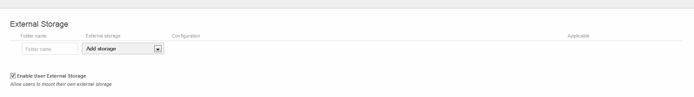
Enable users to mount their own devices¶
In order to allow end users to mount their own devices, select the radio button next to Enable User External Storage .
Local Storage¶
This is used to mount storage that is outside ownCloud’s data directory
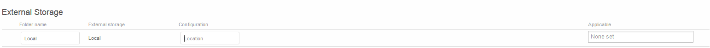
- Location – The directory to mount
- Applicable – A list users of who can see this mount
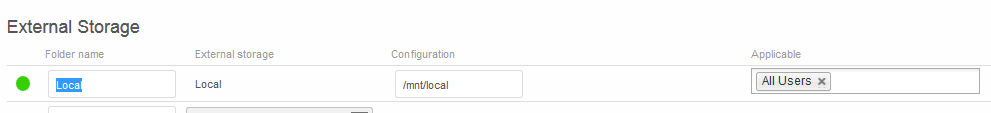
Note: When configured correctly, a Green Light will appear next to the Folder Name. If misconfigured, a Red Light will appear.
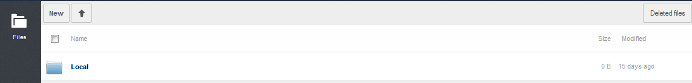
Amazon S3¶
This is used to mount to an S3 server
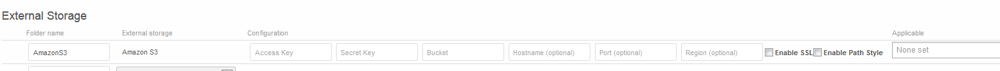
- Access Key – The access key provided by the S3 storage provider
- Secret Key – The secret key provided by the S3 storage provider
- Bucket – The bucket created within the S3 storage server
- Hostname (optional) – The host of the s3 storage server
- Port (optional) – The port to communicate to the host on
- Region (optional) – The region where the storage exists
- Applicable – A list of users who can see this mount
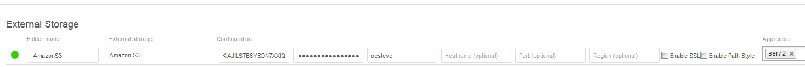
Note: When configured correctly, a Green Light will appear next to the Folder Name. If misconfigured, a Red Light will appear.
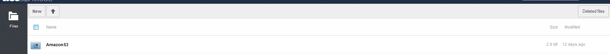
Dropbox¶
Mounts a dropbox in the Dropbox cloud into the virtual file system.
Configure DropBox¶
Log onto the Dropbox Developers page: http://www.dropbox.com/developers .
Select App Console:
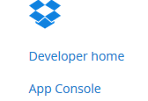
This will ask you to accept terms and conditions.
Select Dropbox API and configure down the page as follows:
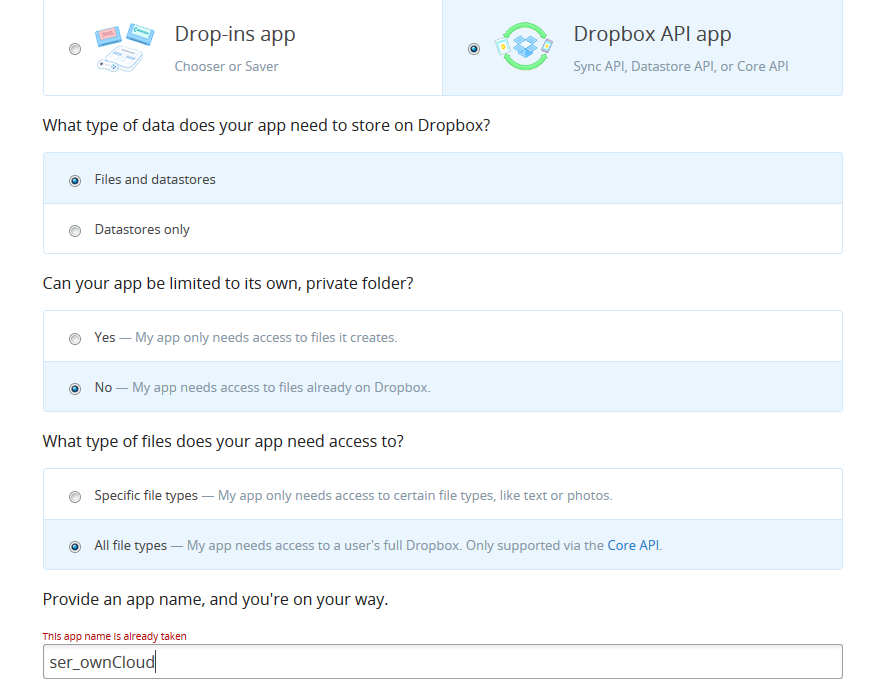
The name can be any unique name desired.
Select Create App
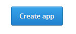
Enter the OAuth redirect URI as follows:
http://<ownCloud instance>/index.php/settings/personal
http://<ownCloud instance>/index.php/settings/admin
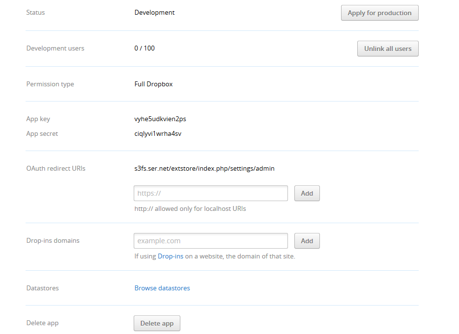
Take note of the App Key and App Secret and enter into ownCloud.
ownCloud Configuration¶
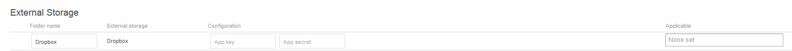
- App key – The app key to login to your Dropbox
- App secret – The app secret to login to your Dropbox
- Applicable – A list users of who can see this mount
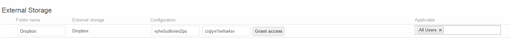
Select “Grant Access” and the following appears
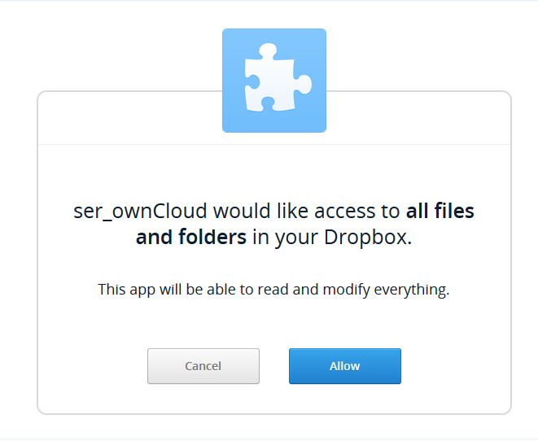
Note if you are not logged into Dropbox, you will first be prompted to login.
Select Allow.
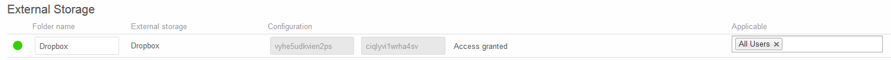
Note: When configured correctly, a Green Light will appear next to the Folder Name. If misconfigured, a Red Light will appear.
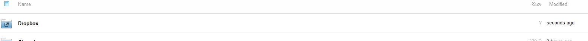
FTP¶
Mounts a folder on a remote FTP or FTPS server
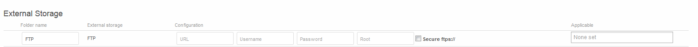
- URL – The hostname of the FTP/FTPS server
- Username – The username to login to the FTP/FTPS server
- Password – The password to login to the FTP/FTPS esrver
- Root – The folder inside the FTP/FTPS server to mount (optional – defaults to ‘/’)
- Secure ftps:// – Whether to use ftps:// to connect to the FTP server instead of ftp://
- Applicable – A list users of who can see this mount
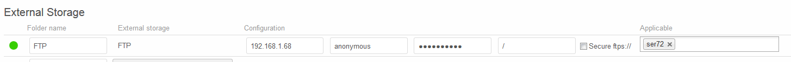
Note: When configured correctly, a Green Light will appear next to the Folder Name. If misconfigured, a Red Light will appear.
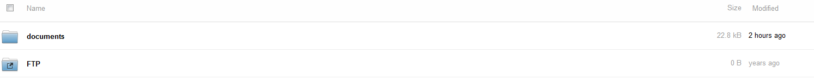
GoogleDrive¶
Mounts a share in the Google cloud.
Configure GoogleDrive¶
All applications that access a Google API must be registered through the “Google Cloud Console”. This can be accessed at the following URL:
Once logged into Google, create a project by selecting Create Project
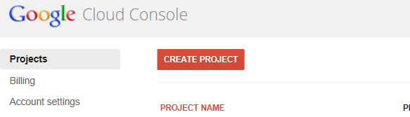
Enter a Project name and either keep or enter a new Project ID
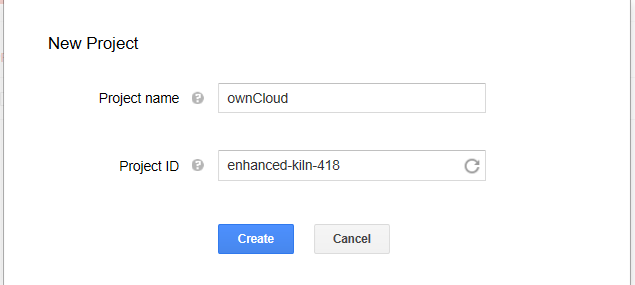
Select the project and choose the APIs & auth menu entry
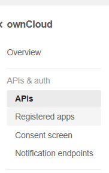
Enable Drive API and Drive SDK and then select the 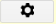 next to either Drive API or Drive SDK
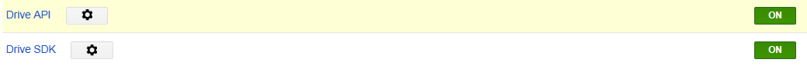
Select API Access on the menu
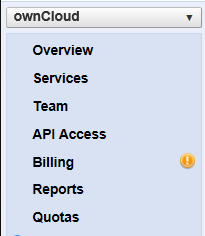
Select REGISTER APP
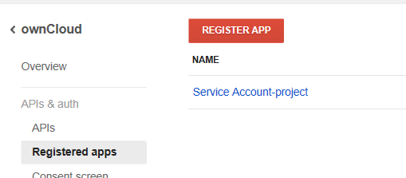
Enter a name and select Web Application
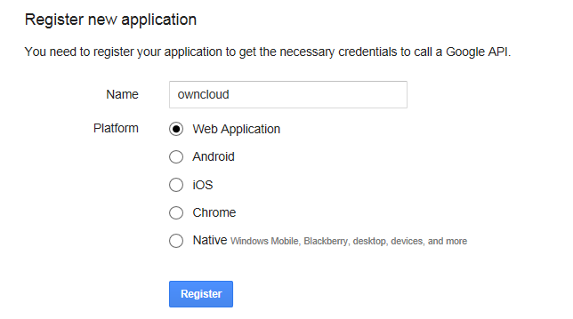
Expand OAuth 2.0 Client ID
Enter the following in the REDIRECT URI field
http://<ownCloud instance>/index.php/settings/personal
http://<ownCloud instance>/index.php/settings/admin
Note: The <ownCloud instance> must be a Fully Qualified Domain Name. It cannot be an IP address
Select Generate
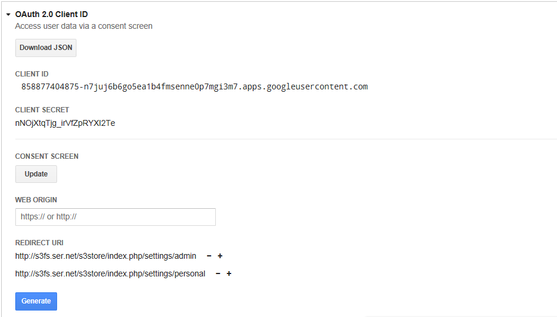
Verify that the required email addresses are in the Permissions tab
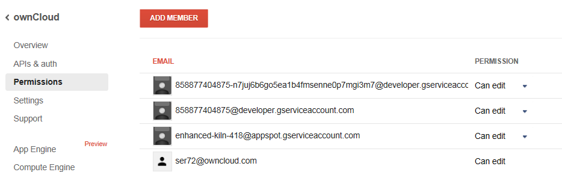
Configure ownCloud¶
Prior to configuring the mount, an E-mail address needs to be configured in the Personal tab
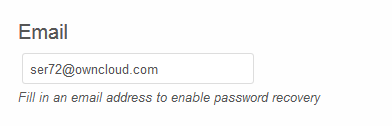
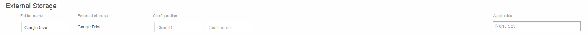
- Client ID – The client id to login to the Google Drive from OAuth 2.0 Client ID above
- Client secret – The client secret to login to the Google Drive from OAuth 2.0 Client ID above
- Applicable – A list users of who can see this mount
Once the required fields are filled in, a Grant access button appears. Select this button
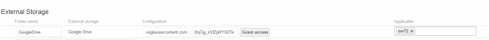
The following screen appears. Select Accept
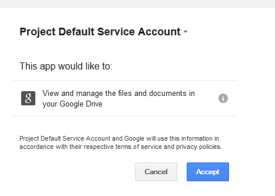
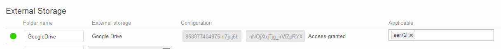
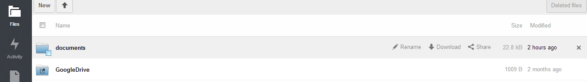
Note: When configured correctly, a Green Light will appear next to the Folder Name. If misconfigured, a Red Light will appear.
OpenStack Object Storage¶
Mounts a container on an OpenStack Object Storage server.
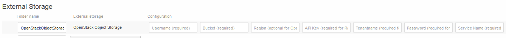
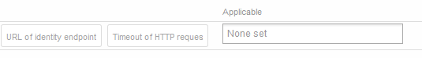
- Username
- Bucket
- Region
- API Key
- Tenantname
- Password
- Service Name
- URL of identity Endpoint
- Timeout of HTTP request
- Applicable – A list users of who can see this mount
Note: When configured correctly, a Green Light will appear next to the Folder Name. If misconfigured, a Red Light will appear.
SMB/CIFS¶
Mounts a folder on a remote Samba server, NAS appliance, or Windows machine.
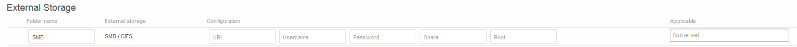
- URL – The host name of the Samba server.
- Username – The user name used to login to the Samba server.
- Password – The password to login to the Samba server.
- Share – The share on the Samba server to mount.
- Root – The folder inside the Samba share to mount (optional, defaults to ‘/’)
- Applicable – A list users of who can see this mount
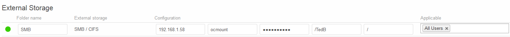
Note: When configured correctly, a Green Light will appear next to the Folder Name. If misconfigured, a Red Light will appear.
Note: The SMB backend requires smbclient to be installed on the server
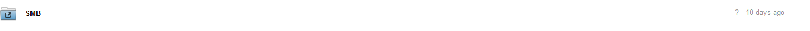
ownCloud/WebDAV¶
Mounts a folder on a WebDAV server (or another ownCloud instance via WebDAV).
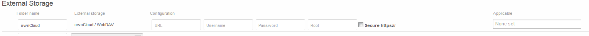
- URL – The hostname of the WebDAV server.
- Username – The username used to login to the WebDAV server.
- Password – The password used to login to the WebDAV server.
- Root – The folder inside the WebDav server to mount (optional, defaults to ‘/’)
- Secure https:// - Whether to use https:// to connect to the WebDav server instead of http://
- Applicable – A list users of who can see this mount
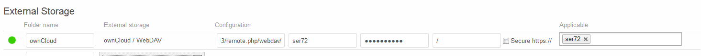
Note: When configured correctly, a Green Light will appear next to the Folder Name. If misconfigured, a Red Light will appear.
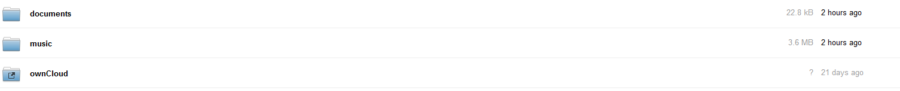
SFTP¶
Mounts a folder on a remote SSH server.
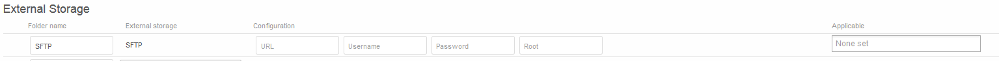
- URL – The hostname of the SSH server.
- Username – The username used to login to the SSH server.
- Password – The password used to login to the SSH server.
- Root – The folder inside the SSH server to mount (optional, defaults to ‘/’)
- Applicable – A list users of who can see this mount
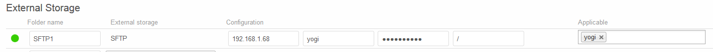
Note: When configured correctly, a Green Light will appear next to the Folder Name. If misconfigured, a Red Light will appear.
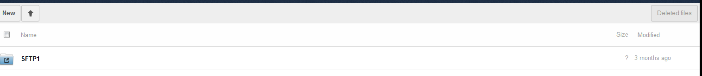
iRODS¶
Mounts a folder on a iRODS server.
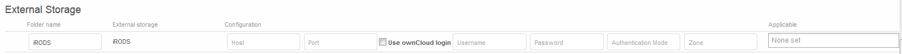
- Host
- Port
- Use ownCloud login
- Username
- Password
- Authentication Mode
- Zone
- Applicable – A list users of who can see this mount
Note: When configured correctly, a Green Light will appear next to the Folder Name. If misconfigured, a Red Light will appear.
Configuration File¶
The configuration of mounts created within the External Storage App are stored in the data/mount.json file. This file contains all settings in JSON (JavaScript Object Notation) format. Two different types of entries exist:
- Group mounts - Each entry configures a mount for each user in group
- User mount – Each entry configures a mount for a single user or all users.
For each type, there is a JSON array with the user/group name as key and an array of configuration values as the value. Each entry consist of the class name of the storage backend and an array of backend specific options (described above) and will be replaced by the user login.
Although configuration may be done by making modifications to the mount.json file, it is recommended to use the Web-GUI in the administrator panel (as described in the above section) to add, remove, or modify mount options in order to prevent any problems.